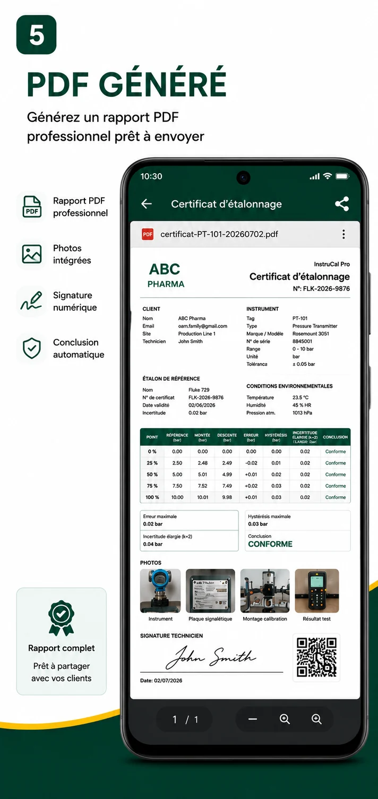
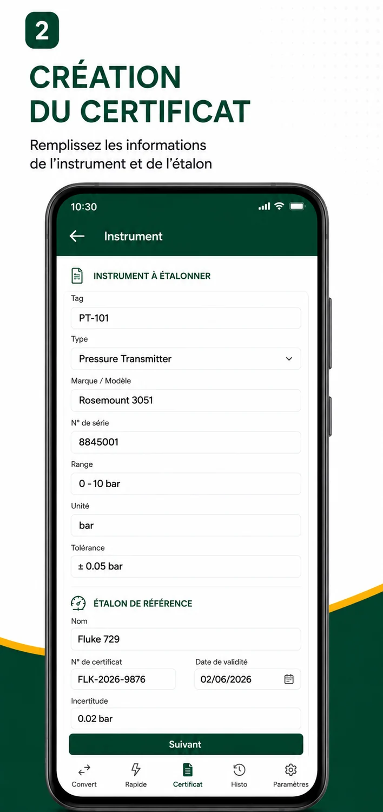
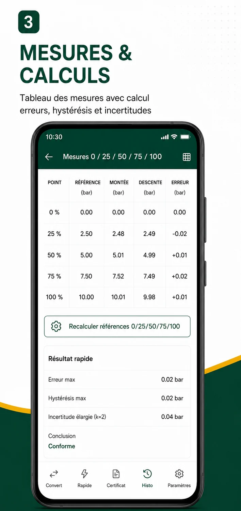

Établir un certificat
Renseignez l’instrument et l’étalon, saisissez les points de mesure, ajoutez photos et signature, puis partagez le PDF. Le certificat complet propose aussi un export Excel.
Métrologie et maintenance industrielle
Saisissez les mesures sur le terrain, vérifiez les écarts et partagez le certificat PDF. InstruCal Pro accompagne les prestataires de métrologie, les équipes de maintenance et les techniciens indépendants.
Voir un exemple de certificat PDF
Renseignez l’instrument et l’étalon, saisissez les points de mesure, ajoutez photos et signature, puis partagez le PDF. Le certificat complet propose aussi un export Excel.
Consignez l’étalonnage d’une vanne ou d’un positionneur et les résultats d’un tarage de soupape. Pro inclut une simulation de vanne P, PI et PID avec courbes.
Ouvrez la fiche d’un instrument avec son QR code et retrouvez l’historique conservé sur l’appareil. Utilisez les convertisseurs 4–20 mA, Pt100 et thermocouples pendant l’intervention.
Visuels de démonstration pour un transmetteur de pression.


Gratuit pour découvrir le parcours d’étalonnage.
Abonnement mensuel via Google Play.
Essai gratuit de 7 jours pour les comptes éligibles. Google Play affiche le tarif avant confirmation. Après l’essai, l’abonnement est facturé chaque mois, sauf annulation depuis Google Play avant l’échéance.
En 10 minutes, nous parcourons une intervention type, de la saisie des mesures au partage du PDF. Indiquez-nous le type d’instrument que vous étalonnez.
Demander une démo par e-mail oami.familly@gmail.com